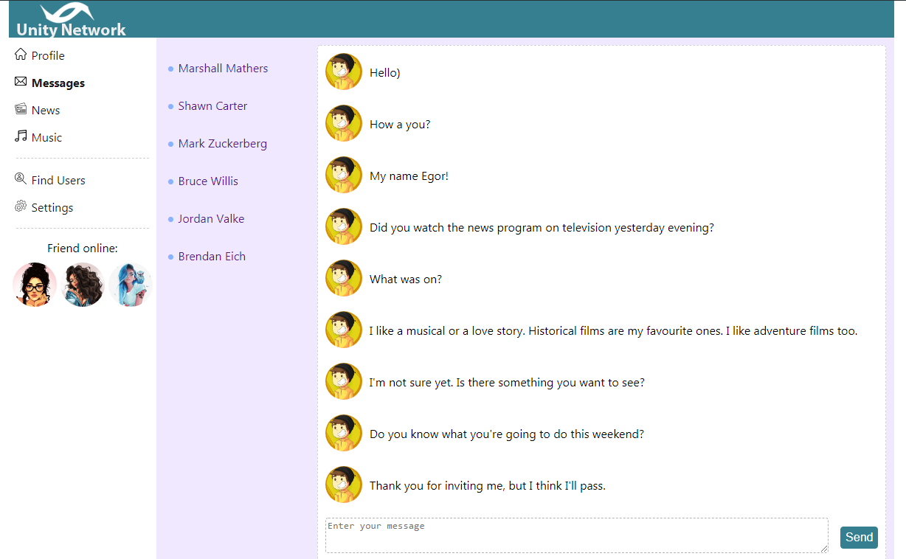
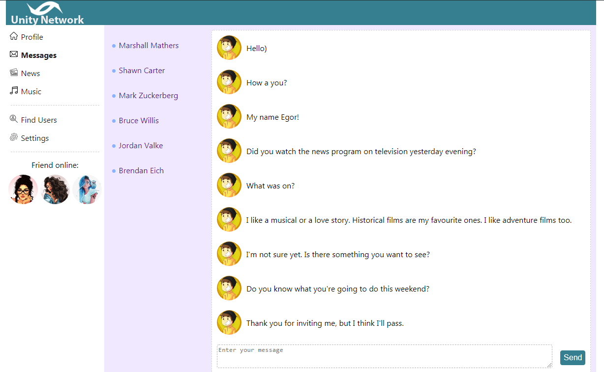

[#] За сегодня прошел 4 урока (На данный момент на 62-м уроке). Начали уже работать с логинизацией, и реализовали чтение параметров из строки запроса.
[#] Начал изучать офф. Документацию по React. Прочел из раздела [Основные понятия] 8 глав. Дополнительно оснакомился с => Index as a key is an anti-pattern
08.03.2021
[#] За сегодня прошел 5 уроков (На данный момент на 58-м уроке). Познакомились с Классовой компонентой. Cоздали постраничную навигацию (Pagination) и сделали отображение Preloader во время запросов на сервер.
07.03.2021
[#] За сегодня прошел 4 урока (На данный момент на 53-м уроке). Сделали первые шаги к запросам на сервер. Много рефакторинга кода и добавления новых плюшек.
Скриншоты учебного проекта
 


06.03.2021
[#] За сегодня прошел 4 урока (На данный момент на 49-м уроке). Подключили прослойку между React-ом и Redux-ом => (React-Redux). Взаимодействовать со state-ом стало намного проще. Отработал более детально работу с объектами, а точнее их копирование.
Дополнительно просмотрел видео о копировании обьектов => Объекты и массивы. Как правильно копировать?
05.03.2021
[#] За сегодня прошел 1 урок (На данный момент на 45-м уроке). Сегодня было много рефакторинга, переделывал структуру страницы Dialogs. А также ознакомился с Контекстом. Применил в коде ну и почитал документацию по теме Контекст.
04.03.2021
[#] За сегодня прошел 5 уроков (На данный момент на 44-м уроке). Сегодня познакомился с библиотекой Redux, интересно то, что до этого изобретали свой Redux (прекрасно то, что теперь я имею знания как устроен Redux и как он работает изнутри).
03.03.2021
[#] За сегодня прошел 5 уроков (На данный момент на 39-м уроке). Процесс обучения идет хорошо, все таки знание Нативного JS очень облегчает понимание происходящего.
Скриншоты учебного проекта
02.03.2021
[#] За сегодня прошел 9 уроков (На данный момент на 35-м уроке). Завтра доделаю и выложу первые скрины.
01.03.2021
[#] За сегодня прошел 3 урока (На данный момент на 26-м уроке), получается прикольная социальная сеть на React (точнее одна её страница), завтра немного доделаю и скину свой вариант.
Итоги Февраля 2021 года [часов]: HTML & CSS [26], JavaScript [97], React.js [24], общие познания IT [18] => Всего [165]
28.02.2021
[#] Дополнительная информация (Убираем перезагрузку страницы) => [HTML5 History API], [Маршрутизация
React],
[О маршрутизации на Learn-ReactJS]
[#] За сегодня прошел 14 уроков (На данный момент на 23-м уроке)